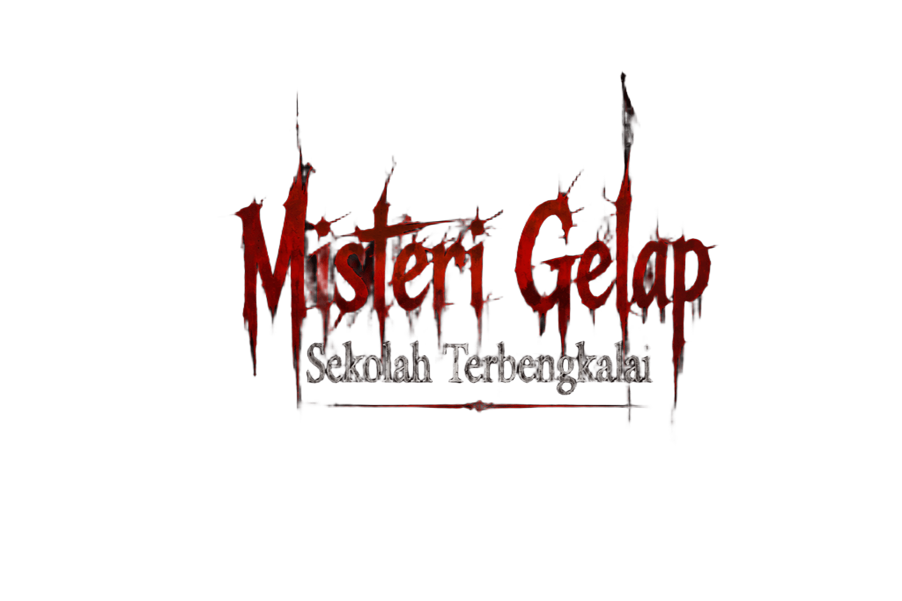
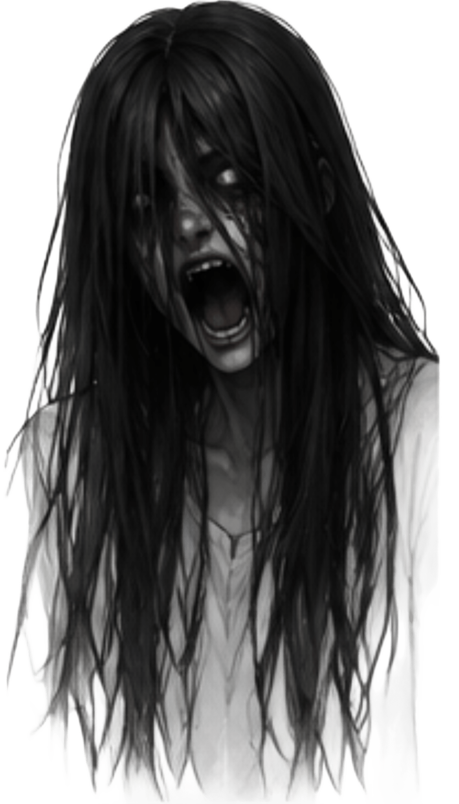

YumeID
PERINGATAN
Game ini mengandung unsur horror dan mistis, dan mengandung jump scare. Tidak disarankan untuk pemain dengan gangguan mental dan lemah jantung!
16+
Untuk usia 16 tahun ke atas

Tekan di mana saja untuk mulai
Game ini mengandung unsur horror dan mistis, dan mengandung jump scare. Tidak disarankan untuk pemain dengan gangguan mental dan lemah jantung!
Untuk usia 16 tahun ke atas

Tekan di mana saja untuk mulai
Klik di mana saja untuk menutup

BERSAMBUNG...